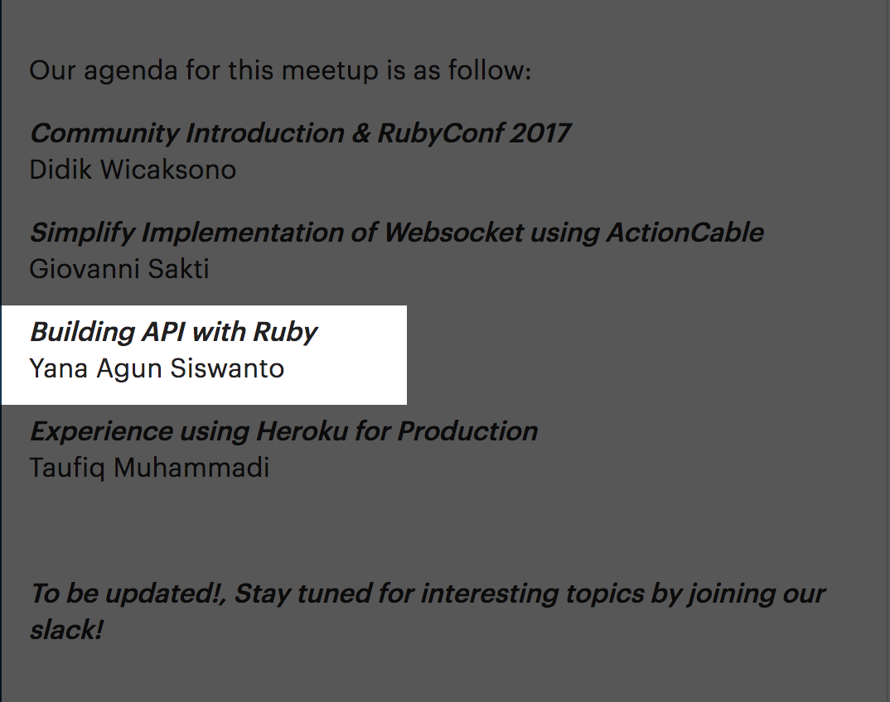

Judul Asli

- Ruby On Rails Developer
- Upwork Freelancer
- Mahasiswa
Pre Mahasiswa
- Codecampz (Hendra Gunawan)
- Magloft.com (Seangkatan Reydi Sutandang)
Saat Menjadi Mahasiswa
- Informerly.com (Theedge.ai)
- Techdayhq.com
- Beberapa Mini Projects di Upwork
- Mentor
Diagram Sederhana Request

Anatomi Request
- Metode
- POST, GET, PUT, DELETE, OPTIONS
- URI
- protokol://host:port/(resource|aksi)
- Header
-
Accept: application/json
Authorization: Bearer aksestoken1234 - Body
- { "name": "Jason", "age": 21 }
Checklist Dalam Membuat Api
- Error Handling
- Parameter Validation
- Representasi Data
- Routing
- Dokumentasi
- Versioning